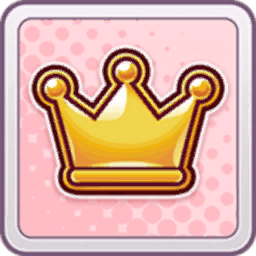

About Me
The charismatic president of Tracen, leader of the Symboli clan, and one of the greatest to ever grace the racetrack, the Emperor, Symboli Rudolf, stands tall and proud. Her long brown hair flows gracefully down to her waist, darkening near her face and accented by a striking white blaze that streaks elegantly from the top. Adding to her regal aura, a large, ornate piece of jewelry dangles from her right ear.
12
Races
2
2nd-3rd Place
7
G1 Wins
- Relationship
-  Career
 Scouting
Scouting